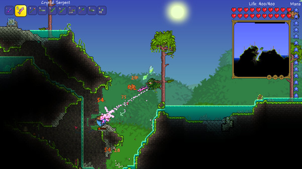

What is Terraria?

Terraria is an adventure game that is yours to shape and turn into whatever you want it to be defending it with many weapons and magic with varieties to summon and many types of armor to help you fight and survive enemies you will face through playing the game.